Portal Configuration
The portal configuration allows administrators to customize the external and internal job portal interface. Users can add a privacy policy link, configure portal buttons, update banner content, adjust text colors, and upload a logo that aligns with organizational branding.
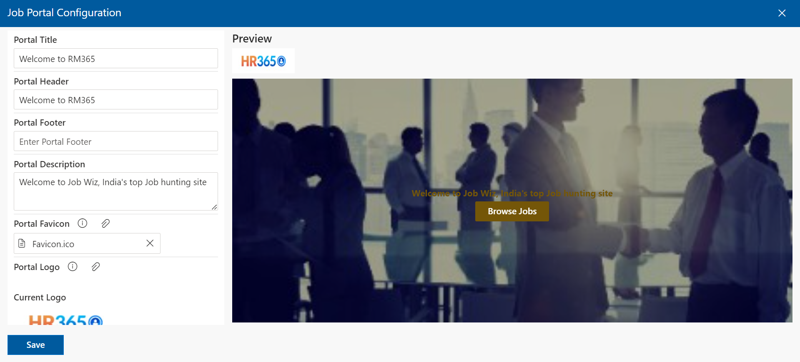
Internal Job Portal Configuration
Set up and manage the internal job portal to streamline internal hiring workflows. This includes job template setup, access control, approval mechanisms, and tracking of employee job applications.
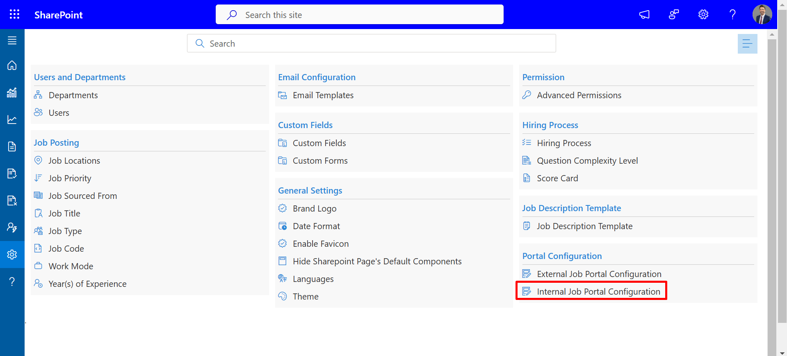
When configuring an internal job posting, follow these steps to ensure a complete and functional setup:
- Basic Details: Enter the title, footer, description, favicon icon, and portal logo. You can also upload two related images for branding purposes.
- Visual Customization: Add a banner image, select the portal color theme and text color, specify the company name, and provide the home page link along with its associated image.
- Internal Page Link: You must provide a valid internal page link. This is required to generate the live internal job posting site and its corresponding preview image.
- Hide SharePoint Default Components: To customize the portal view, click on Configure and enable the option to hide SharePoint’s default components.
- Referral Options: You can choose to hide or show the “Refer Candidate” / “Refer This Job” section by toggling the switch on or off.
- Finalize Setup: After entering all details, click on Save.
- Initially, the Live option will remain deactivated. Once you’ve added the required internal and home page links, the Live option will become active. Clicking this option will open the internal job posting site.
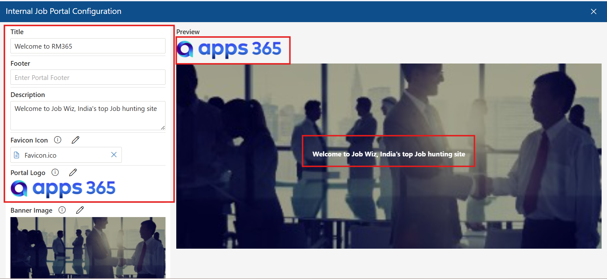
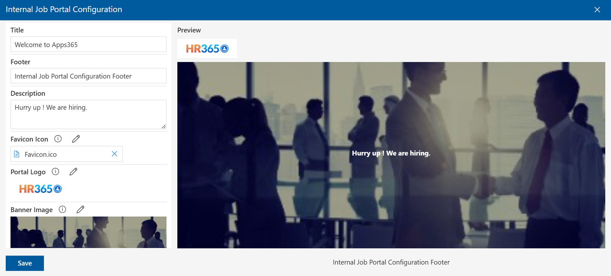
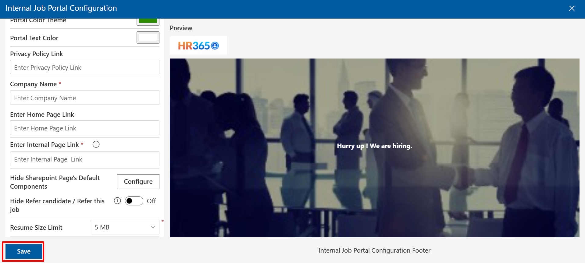
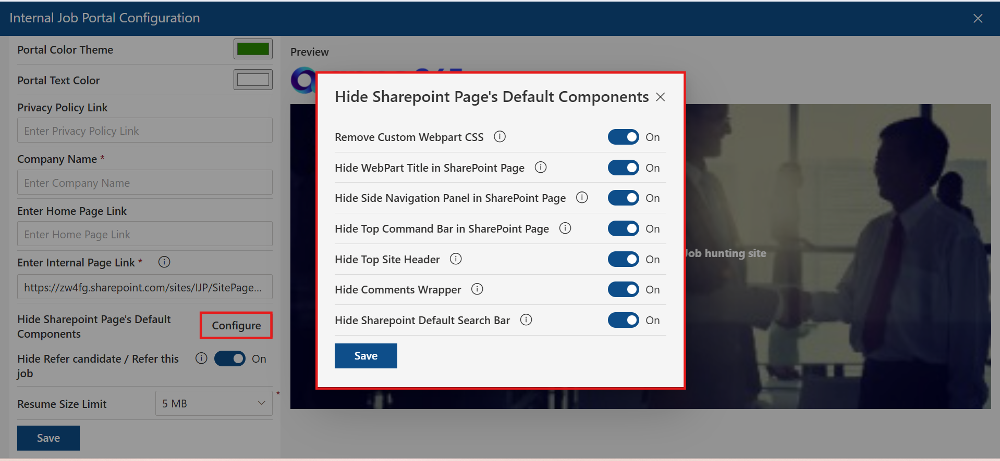
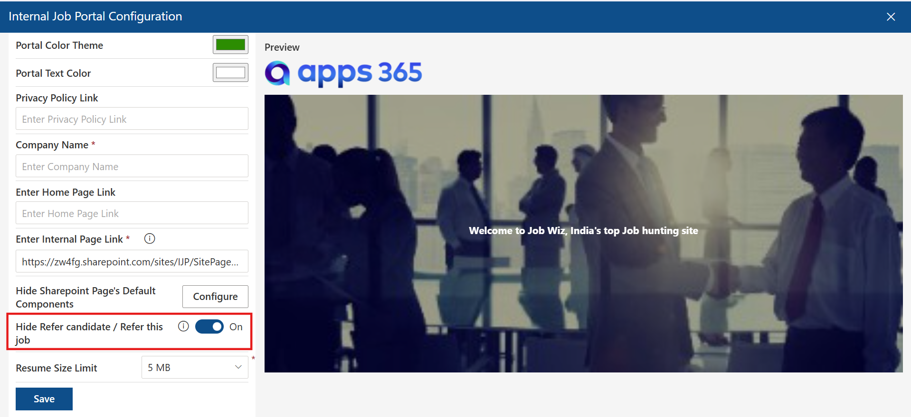
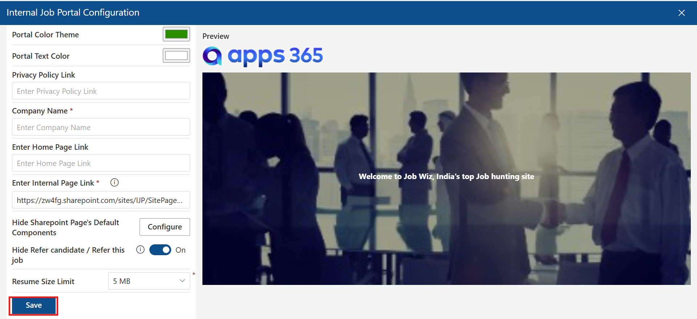
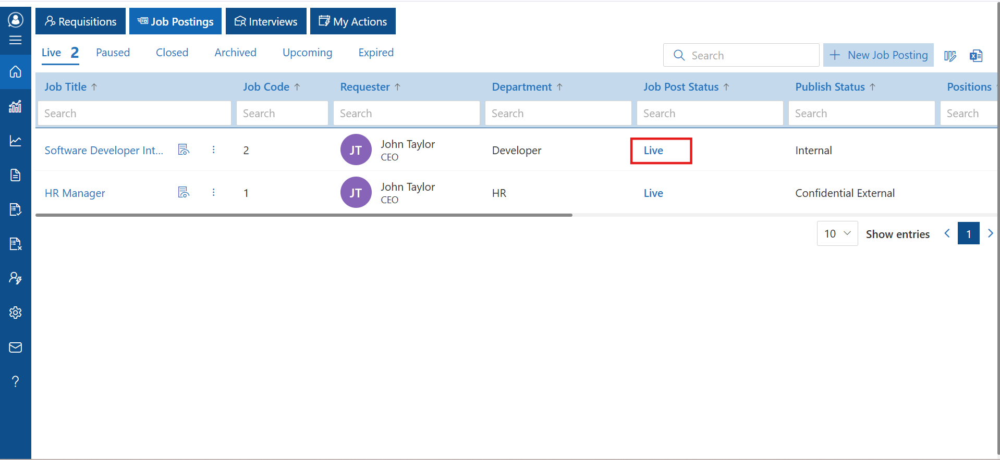
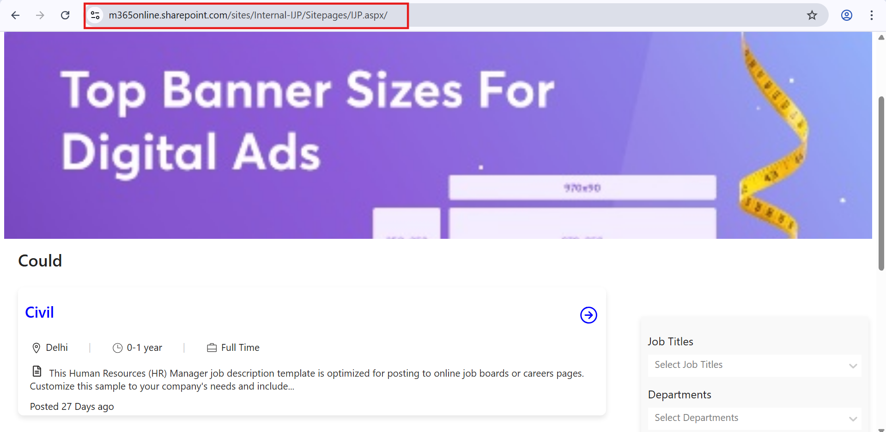
Click on the provided icon to open the job application interface.
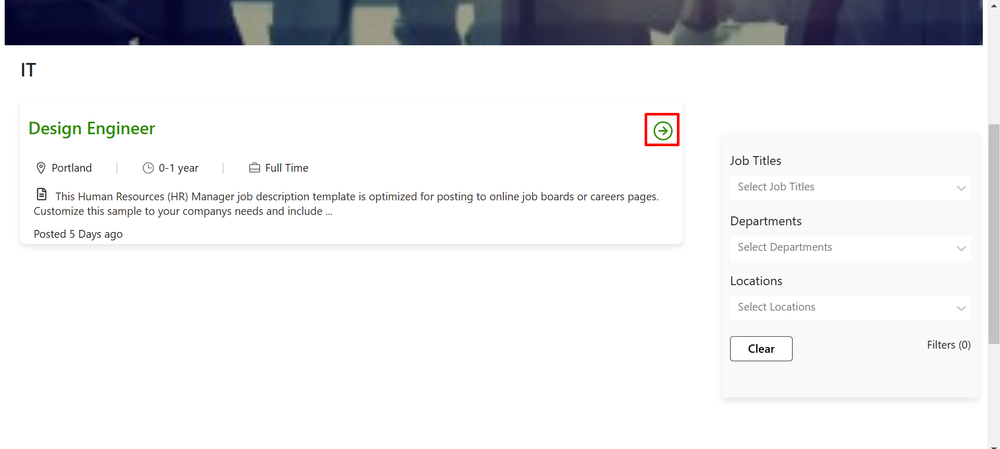
Then, click the Apply button.
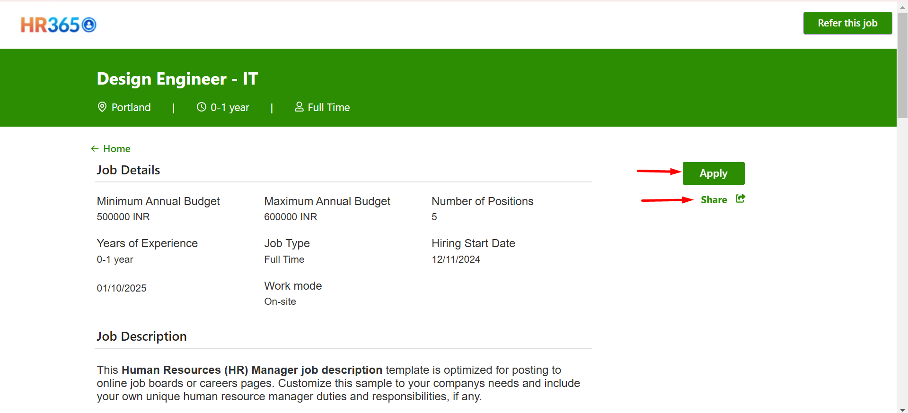
Candidates can enter the required details per job criteria and upload a resume.
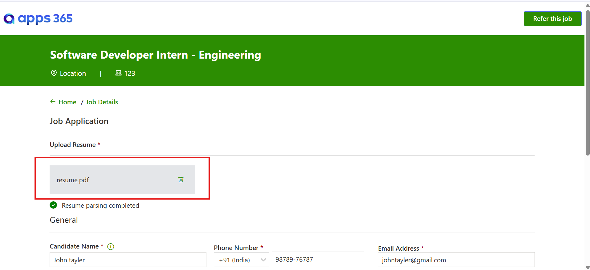
The candidate details will be automatically extracted from the uploaded resume, eliminating the need for manual data entry.
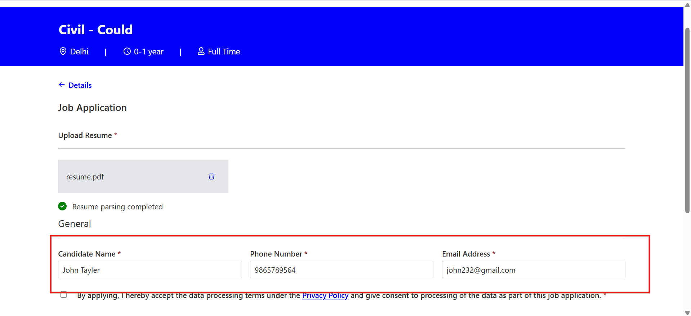
After completing the form, select the checkbox and click the submit button to finalize the application.
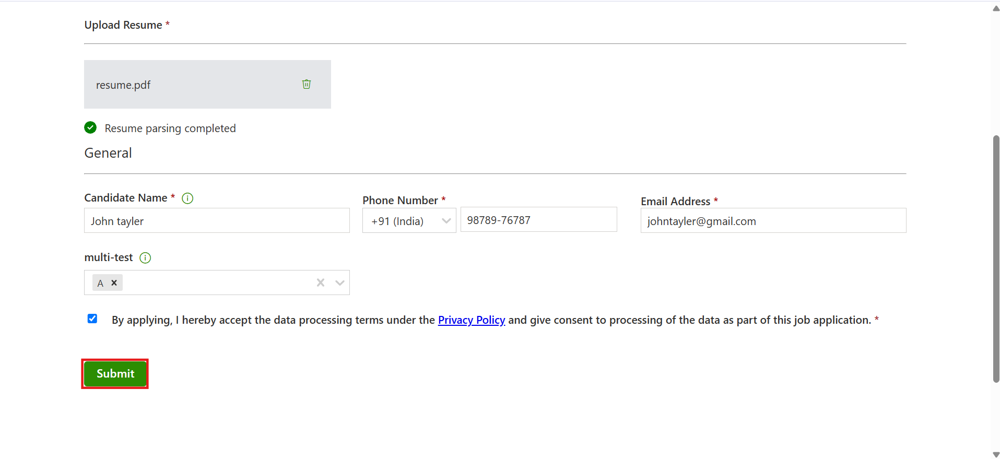
When you upload a job posting, the live site and its preview image will not be immediately available. To activate the live option, ensure that the Internal Portal Configuration includes a valid internal page link and corresponding image. Once these are added, the live option becomes active, allowing you to click the link and view the job post with its associated image.
Confidential Internal
Confidential Internal jobs are shared only with selected employees via a private URL. These jobs do not appear in the standard internal job portal listings.
First, click on Internal Portal Configuration, enter the internal portal Home URL, and click Save to update the configuration.
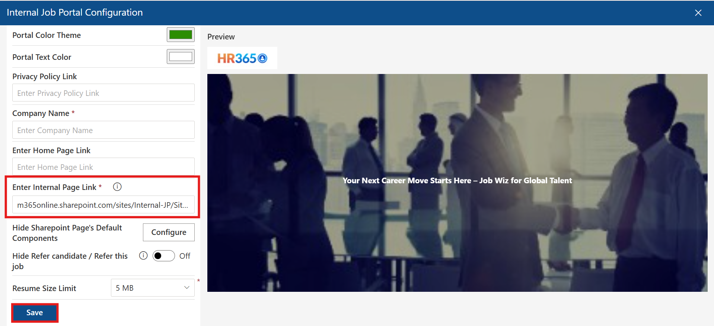
After publishing a job as Confidential Internal, copy the unique job URL from the configuration. This private link can be shared directly with chosen employees, allowing access to only that specific job.
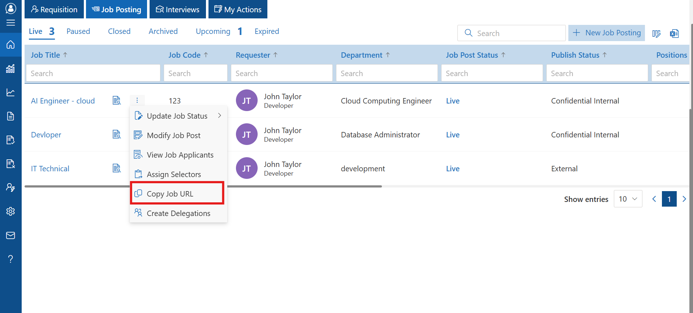
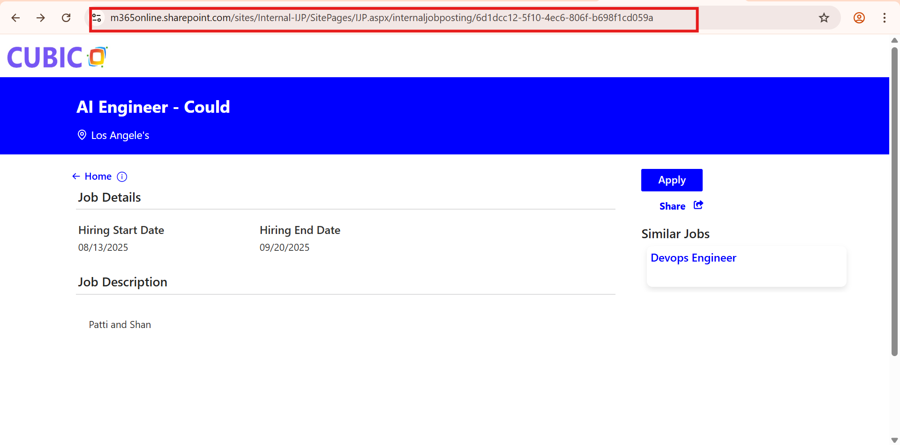
External Job Portal Configuration
Every great hire starts with someone finding your job posting and thinking, “okay, I could see myself here.” The External Job Portal is that first impression — a branded, public careers site where candidates browse your open roles and apply, without ever touching your internal SharePoint environment. External Job Portal Configuration is the settings page where you build it: your logo, your colors, your pitch, all pointed at one shareable link you can drop into LinkedIn, your careers page, or a job board before lunch.
| What it does | Builds and brands a public careers site where candidates browse RM365 job postings and submit applications — no developer required. |
| Where to find it | Settings (gear icon) → Portal Configuration → External Job Portal Configuration |
| Who configures it | An RM365 Admin handles the branding fields; a Global Administrator is needed once, up front, to grant permissions. |
| Before you start | Your SharePoint site URL, plus any logo, banner, and favicon files you want on the portal. |
| Your candidates land at | https://career.rm365.org/{YourTenantName}
|
Prerequisites
Before you start, make sure you have:
- Global Administrator access — needed for the one-time permissions setup in Step 1.
- Your RM365 admin role — needed to open Settings and configure the portal itself.
- Branding assets on hand — logo, banner image, and favicon — if you want the portal to look like your company's, not RM365's default.
- Your company name and privacy policy link — Company Name is a required field.
Step 1: Connect RM365 to Your SharePoint Tenant (One-Time Setup)
This part only happens once per tenant. Think of it as introducing RM365 to your Microsoft 365 environment so the two can talk — after that, you'll never see this screen again.
- Copy your SharePoint site URL. You'll need the full site address (for example,
https://yourtenant.sharepoint.com/sites/YourSite) - Go to the HR365 Tools page: https://employeedirectory.hr365online.com/.
- Find the “Specific Site Permission for RM 365” card, paste your site URL into the field, and click Run.
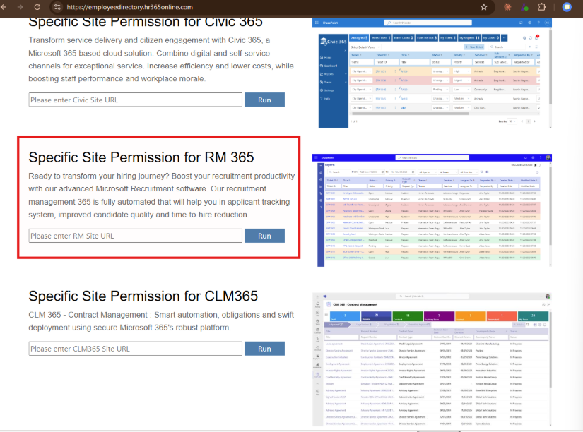
- Grant Microsoft admin consent. Open the following link and sign in with a Global
Administrator account for your tenant:
https://login.microsoftonline.com/common/adminconsent?client_id=4e531893-0aa3-47a1-ac63-ee779b805393&redirect_uri=https%3A%2F%2Fcareer.rm365.org&sso_reload=true - Review the requested permissions and click Accept.
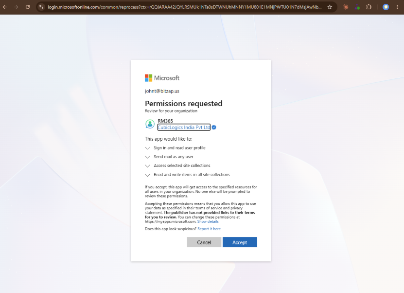
client_id in that consent
link is fixed — it identifies the RM365 application itself, not your specific tenant. You
don't need to edit the link; simply opening it while signed into your own Microsoft 365 admin account
scopes the grant to your organization. This consent is a one-time, tenant-wide grant. Once a Global
Administrator accepts it, you won't need to repeat this step for additional RM365
sites you register later.
Step 2: Open External Job Portal Configuration
- As an RM365 admin, click the gear (Settings) icon in the left navigation.
- Under Portal Configuration, click External Job Portal Configuration.
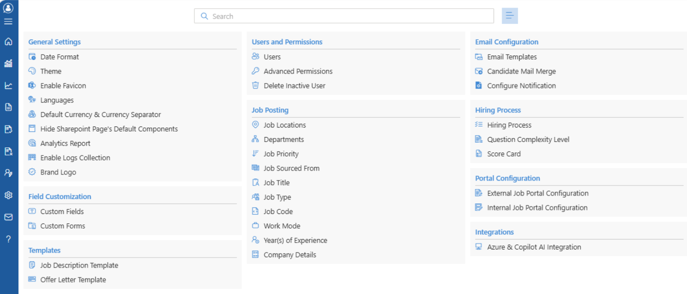
Step 3: Brand the Portal
A panel opens with your configuration fields on the left and a live Preview on the right — every change you make (logo, banner, description, colors) updates the preview instantly, so you can see exactly what candidates will see before you save anything.
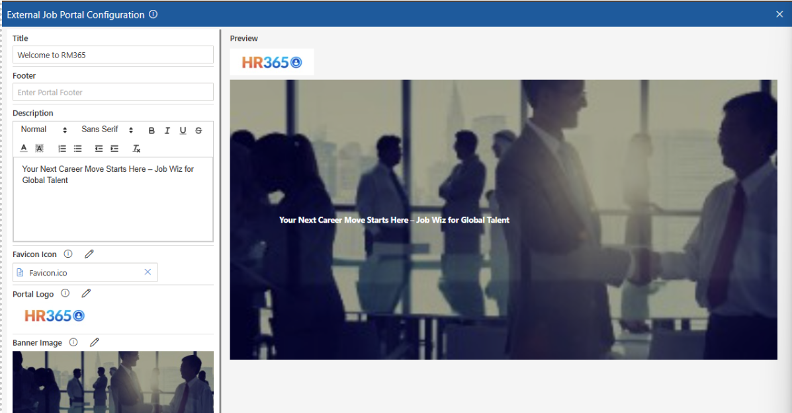
Work through the fields:
- Title — the headline shown on the portal (defaults to “Welcome to RM365”; make it yours).
- Footer — text shown at the bottom of the portal.
- Description — your pitch to candidates. This overlays the banner image, so keep it short and punchy.
- Favicon Icon, Portal Logo, Banner Image — click the pencil icon next to each to upload your own files.
- Portal Color Theme and Portal Text Color — set your accent color and the text color that sits over the banner.
- Privacy Policy Link — paste a link if you have one.
- Company Name — required. This is your organization's name as candidates will see it.
Step 4: Set the Resume Size Limit
- Scroll down to Resume Size Limit and choose the maximum file size RM365 should accept for candidate resumes (defaults to 5 MB).
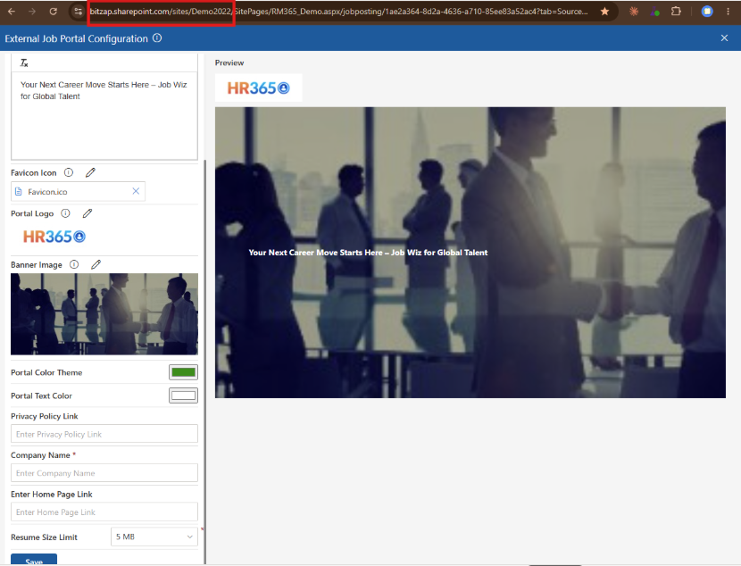
Step 5: Point the Portal at Its Home Page Link
This is the field that actually makes the portal live, so don't skip it.
- In Enter Home Page Link, type:
https://career.rm365.org/{YourTenantName} - Replace
{YourTenantName}with your actual tenant name — the first segment of your SharePoint domain. For example, if your SharePoint URL isbitzap.sharepoint.com, your tenant name isbitzap, and your link becomeshttps://career.rm365.org/bitzap.
.sharepoint.com. In
our source screenshots, the site was bitzap.sharepoint.com/sites/Demo2022,
so the tenant name is bitzap.
Step 6: Save and Verify
- Once every field looks right in the Preview pane, click Save.
- Open a new browser tab and go to your portal's live URL:
https://career.rm365.org/{YourTenantName}. - Confirm your logo, banner, description, and colors are showing up exactly as configured.
Step 7: Share It
Your external portal is now live at https://career.rm365.org/{YourTenantName}.
Post it, pin it, or paste it anywhere candidates might be looking — your careers page, LinkedIn, a
job board — and it'll always reflect your current open roles and branding.
All job postings made by the organization are publicly available on the external portal: RM365 Online Job Portal.
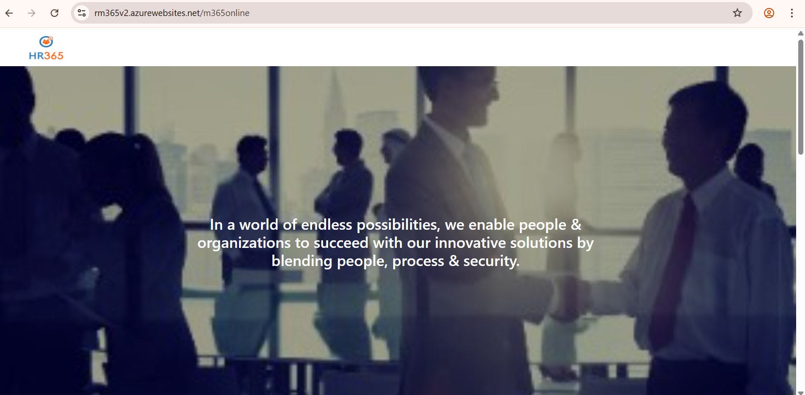
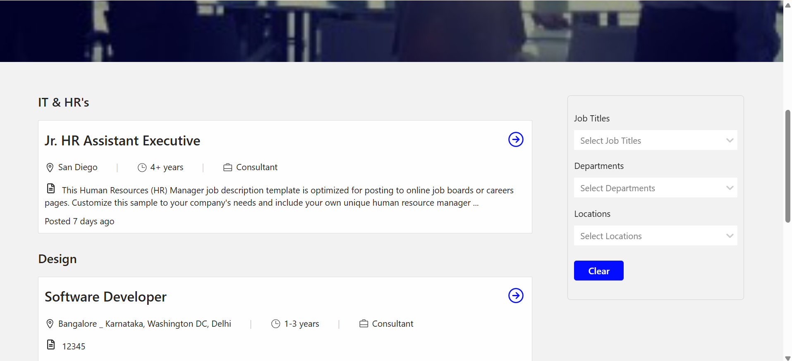
Click on the provided icon to open the job application interface.
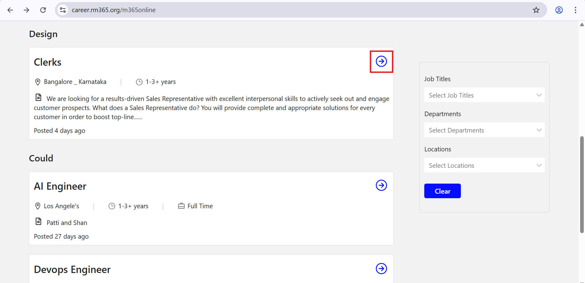
Then, click the Apply button.
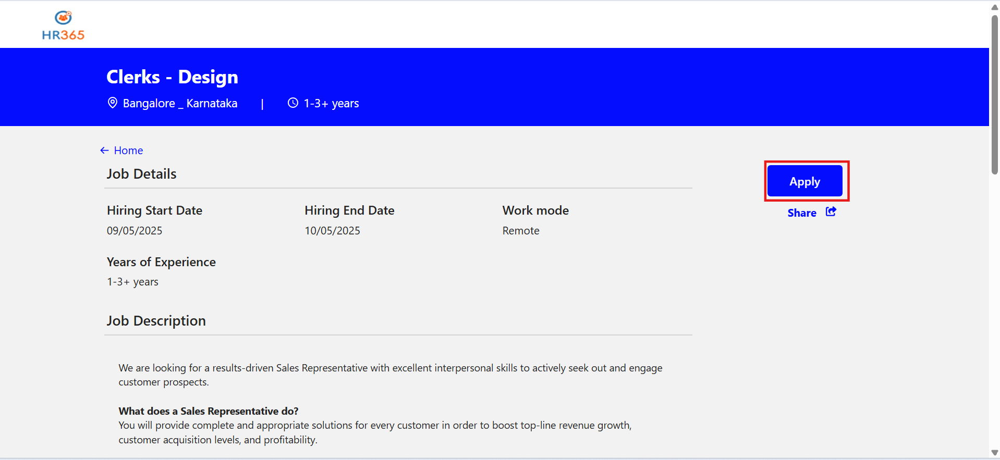
Candidates can enter the required details per job criteria and upload a resume.
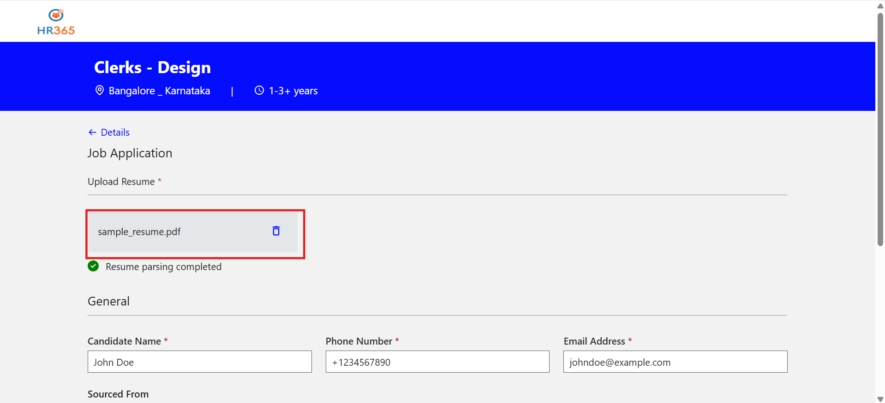
The candidate details will be automatically extracted from the uploaded resume, eliminating the need for manual data entry.
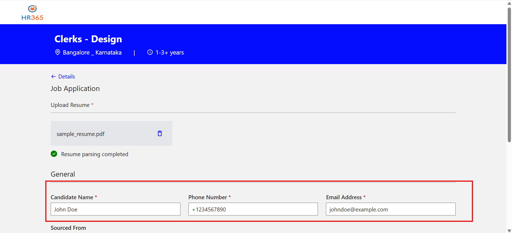
After completing the form, select the checkbox and click the submit button to finalize the application.
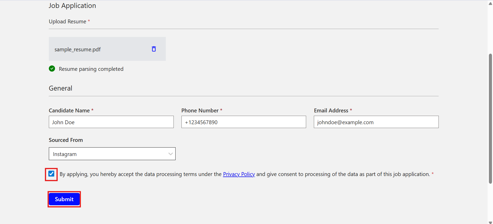
Confidential External
Confidential External jobs are accessible only through a private link and do not appear in the public external portal. This option is used when the job must remain discreet but still be available to selected external candidates.
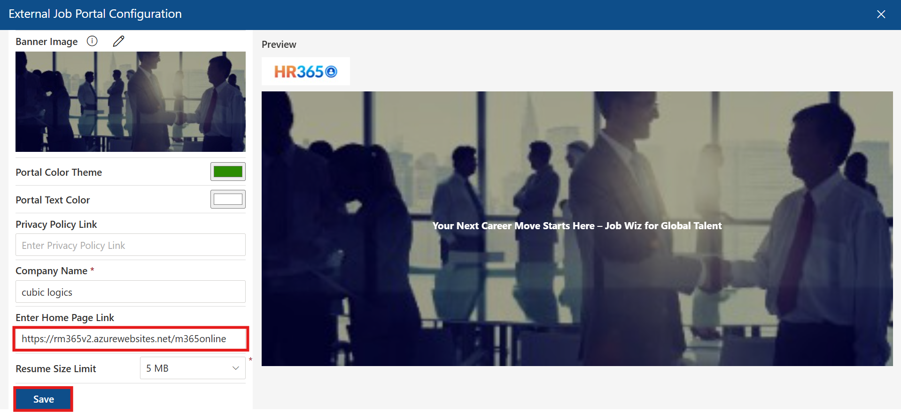
Similar to Confidential Internal, after creating a job with Confidential External status, administrators can copy its URL and share it directly with chosen external candidates. Only individuals with the link can access and apply.
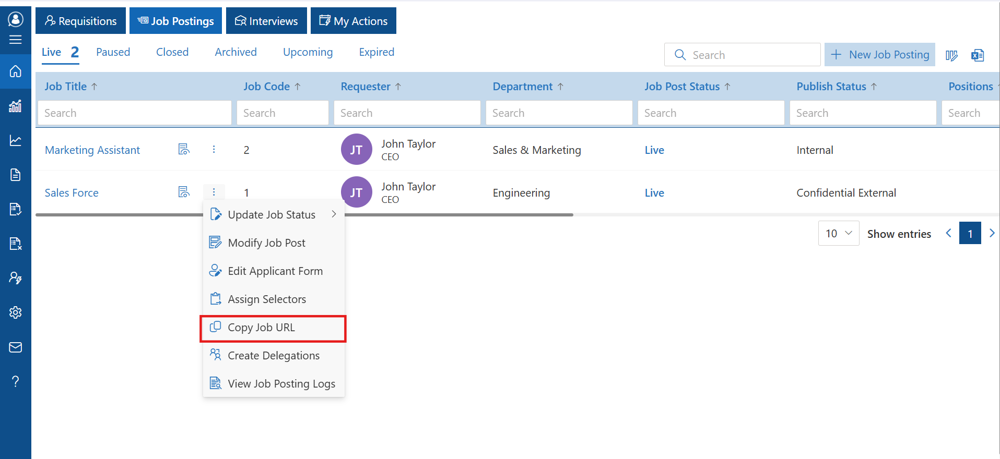
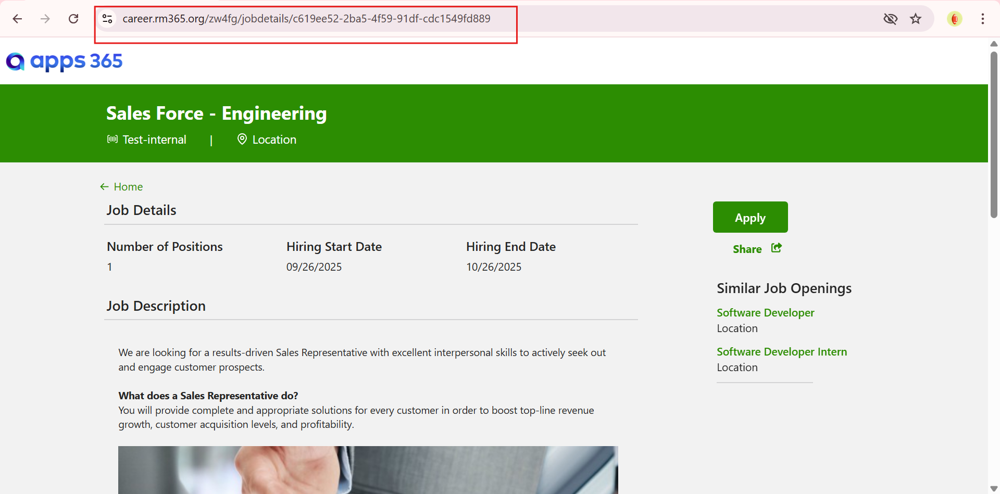
1. To install the Internal/External Job Portal (IJP), customers must raise a request with the
support team. The support team will deploy and configure the IJP app on the customer’s SharePoint
site, enabling administrators to set up and manage job postings.
2.
For first-time RM365 installations within a tenant, once a user uploads a job posting and clicks the
Live option, the system automatically opens the corresponding job posting site without
requiring any additional configuration.